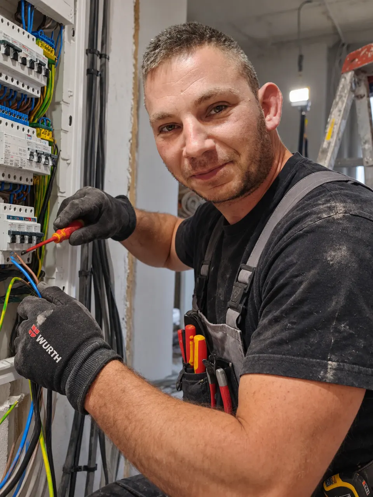

Villanyszerelő – 2010 óta
Biztonságos és modern villanyszerelés kompromisszumok nélkül.
Mester György egyéni vállalkozó – épületvillamosság, erősáramú rendszerek, vezérlések, okosotthonok és gyors hibaelhárítás garanciával, hivatalos számlával.
Kapcsolja a Q1-et
Bemutatkozás
Több mint 15 év szakmai tapasztalattal a hátam mögött
Mester György vagyok, egyéni vállalkozó, villanyszerelő. 2010 óta végzem hivatásomat az épületvillamosság és az erősáramú rendszerek területén. Célom, hogy ügyfeleim számára biztonságos, esztétikus és a mai kornak mindenben megfelelő elektromos rendszereket építsek ki, vagy hárítsam el a felmerülő hibákat.
- Tapasztalat és rutin (2010 óta) A több mint másfél évtizedes gyakorlatnak köszönhetően a legváratlanabb hibákat is gyorsan oldom meg.
- Számlaképes munkavégzés Minden elvégzett munkáról hivatalos számlát állítok ki lakossági és céges partnereknek egyaránt.
- Precizitás és garancia A munkáimat úgy végzem, mintha a saját otthonomban csinálnám – tisztán, határidőre.

Szolgáltatások
Mit vállalok?
Teljes körű villanyszerelési munkálatok professzionális szinten, modern eszközökkel.
-
Épületvillamosság
Családi házak, lakások és irodák teljes körű villanyszerelése, új hálózatok kiépítése, meglévő rendszerek modernizálása és elosztótáblák cseréje.
-
Erősáramú berendezések
Erősáramú hálózatok, csatlakozások, nagyobb teljesítményű háztartási és ipari berendezések szakszerű bekötése és ellenőrzése szabvány szerint.
-
Vezérlések
Különböző ipari és lakossági automatizálási, valamint kapcsolási vezérlések tervezése, kivitelezése, hibafeltárása és javítása.
-
Okosotthon rendszerek
Modern okosotthon (Smart Home) megoldások telepítése: világítás, fűtés és biztonsági rendszerek integrálása a maximális kényelemért és energiatakarékosságért.
-
Hibaelhárítás
Gyors és hatékony hibakeresés és elhárítás. Ha elment az áram, lekapcsol a biztosíték, szikrázik a konnektor vagy zárlatot észlel, hívjon bizalommal!
Előnyeim
Miért válasszon engem?
- Hivatalos számla
- Minden munkáról hivatalos számlát állítok ki.
- Tapasztalat 2010 óta
- Több mint 15 év folyamatos szakmai gyakorlat a háttérben.
- Megbízhatóság
- Pontos érkezés, precíz munkavégzés és garancia.
- Modern technológia
- Hagyományos hálózatok és okosotthon rendszerek.
Kapcsolat
Lépjen velem kapcsolatba
Villanyszerelési munkára van szüksége, árajánlatot kérne, vagy sürgős hibaelhárításra lenne szükség? Hívjon telefonon, vagy írjon e-mailt!
A megkeresésekkel kapcsolatos adatkezelésről az Adatvédelmi tájékoztatóban olvashat.